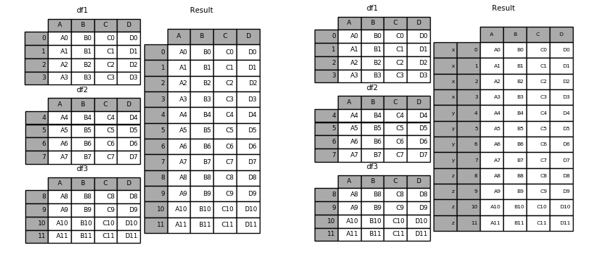

数据分析DAY04
项目：保健品消费情况特征描述性统计
xxxxxxxxxx............apply函数
pandas提供了apply函数方便的处理Series与DataFrame；apply函数支持逐一处理数据集中的每个元素都会执行一次目标函数，把返回值存入结果集中。：
xxxxxxxxxx# series.apply()ary = np.array(['80公斤','83公斤','78公斤','74公斤','84公斤'])s = pd.Series(ary)def func(x): return x[:2]s.apply(func)# dataframe.apply()def func(x): x[pd.isna(x)] = x.mean() return xratings.apply(func, axis=1)排序
Pandas有两种排序方式，它们分别是按标签与按实际值排序。
xxxxxxxxxximport numpy as npd = {'Name':pd.Series(['Tom','James','Ricky','Vin','Steve','Minsu','Jack','Lee','David','Gasper','Betina','Andres']), 'Age':pd.Series([25,26,25,23,30,29,23,34,40,30,51,46]), 'Rating':pd.Series([4.23,3.24,3.98,2.56,3.20,4.6,3.8,3.78,2.98,4.80,4.10,3.65])}unsorted_df = pd.DataFrame(d)按标签（行）排序
使用sort_index()方法，通过传递axis参数和排序顺序，可以对DataFrame进行排序。 默认情况下，按照升序对行标签进行排序。
xxxxxxxxxx# 按照行标进行排序sorted_df=unsorted_df.sort_index()print (sorted_df)# 控制排序顺序sorted_df = unsorted_df.sort_index(ascending=False)print (sorted_df)按标签（列）排序
xxxxxxxxxx# 按照列标签进行排序sorted_df=unsorted_df.sort_index(axis=1)print (sorted_df)按某列值排序
像索引排序一样，sort_values()是按值排序的方法。它接受一个by参数，它将使用要与其排序值的DataFrame的列名称。
xxxxxxxxxxsorted_df = unsorted_df.sort_values(by='Age')print (sorted_df)# 先按Age进行升序排序，然后按Rating降序排序sorted_df = unsorted_df.sort_values(by=['Age', 'Rating'], ascending=[True, False])print (sorted_df)数据合并
concat
concat函数是在pandas的方法，可以根据不同的轴合并数据集。
xxxxxxxxxxr = pd.concat(datas, axis=0, join='outer', ignore_index=False, keys=['x', 'y', 'z'])纵向合并：

横向合并：

merge & join
panda具有全功能、高性能的内存连接操作，与SQL之类的关系数据库非常相似。与其他开源实现相比，这些方法的性能要好得多(在某些情况下要好一个数量级以上)
pandas提供了merge函数实现高效的内存链接操作：
xxxxxxxxxxpd.merge(left, right, how='inner', on=None, left_on=None, right_on=None,left_index=False, right_index=False)| 参数名称 | 说明 |
|---|---|
| left | 接收DataFrame或Series。表示要添加的新数据。无默认。 |
| right | 接收DataFrame或Series。表示要添加的新数据。无默认。。 |
| how | 接收inner，outer，left，right。表示数据的连接方式。默认为inner。 |
| on | 接收string或sequence。表示外键字段名。默认为None。 |
| left_on | 接收string或sequence。关联操作时左表中的关联字段名。 |
| right_on | 接收string或sequence。关联操作时右表中的关联字段名。 |
| left_index | 接收boolean。表示是否将left参数接收数据的index作为连接主键。默认为False。 |
| right_index | 接收boolean。表示是否将right参数接收数据的index作为连接主键。默认为False。 |
| sort | 接收boolean。表示是否根据连接键对合并后的数据进行排序。默认为False。 |
| suffixes | 接收接收tuple。表示用于追加到left和right参数接收数据重叠列名的尾缀默认为('x', 'y')。 |
合并两个DataFrame：
xxxxxxxxxximport pandas as pdleft = pd.DataFrame({ 'student_id':[1,2,3,4,5,6,7,8,9,10,11,12,13,14,15,16,17,18,19,20], 'student_name': ['Alex', 'Amy', 'Allen', 'Alice', 'Ayoung', 'Billy', 'Brian', 'Bran', 'Bryce', 'Betty', 'Emma', 'Marry', 'Allen', 'Jean', 'Rose', 'David', 'Tom', 'Jack', 'Daniel', 'Andrew'], 'class_id':[1,1,1,2,2,2,3,3,3,4,1,1,1,2,2,2,3,3,3,2], 'gender':['M', 'M', 'F', 'F', 'M', 'M', 'F', 'F', 'M', 'M', 'F', 'F', 'M', 'M', 'F', 'F', 'M', 'M', 'F', 'F'], 'age':[20,21,22,20,21,22,23,20,21,22,20,21,22,23,20,21,22,20,21,22], 'score':[98,74,67,38,65,29,32,34,85,64,52,38,26,89,68,46,32,78,79,87]})right = pd.DataFrame( {'class_id':[1,2,3,5], 'class_name': ['ClassA', 'ClassB', 'ClassC', 'ClassE']})# 合并两个DataFramedata = pd.merge(left,right)print(data)其他合并方法同数据库相同：
| 合并方法 | SQL等效 | 描述 |
|---|---|---|
left | LEFT OUTER JOIN | 使用左侧对象的键 |
right | RIGHT OUTER JOIN | 使用右侧对象的键 |
outer | FULL OUTER JOIN | 使用键的联合 |
inner | INNER JOIN | 使用键的交集 |
实验：
xxxxxxxxxx# 合并两个DataFrame (左连接)rs = pd.merge(left,right,on='subject_id', how='right')print(rs)# 合并两个DataFrame (左连接)rs = pd.merge(left,right,on='subject_id', how='outer')print(rs)# 合并两个DataFrame (左连接)rs = pd.merge(left,right,on='subject_id', how='inner')print(rs)分组聚合
pandas提供了功能类似于数据库中group by语句的用于拆分数据组的方法pd.groupby()；该方法提供的是分组聚合步骤中的拆分功能，能根据索引或字段对数据进行分组（Split） 进而针对得到的多组数据执行聚合操作（Apply），最终合并为最终结果（Combine）。

分组
groupby方法的参数及其说明：
xxxxxxxxxxDataFrame.groupby(by=None, axis=0, as_index=True, sort=True)| 参数名称 | 说明 |
|---|---|
| by | 接收list，string，mapping或generator。用于确定进行分组的依据。无默认。 |
| axis | 接收int。表示操作的轴向，默认对行进行操作。默认为0。 |
| as_index | 接收boolearn。表示聚合后的聚合标签是否以DataFrame索引形式输出。默认为True。 |
| sort | 接收boolearn。表示是否对分组依据分组标签进行排序。默认为True。 |
用groupby方法分组后的结果并不能直接查看，而是被存在内存中，输出的是内存地址。实际上分组后的数据对象（Groupby对象）类似Series与DataFrame，是pandas提供的一种对象。
Groupby对象的常用方法：
| 方法 | 说明 |
|---|---|
| groupObject.get_group('A') | 返回A组的详细数据 |
| groupObject.size() | 返回每一组的频数 |
xxxxxxxxxxgrouped = data.groupby(by=['class_id', 'gender'])grouped.get_group((1, 'M'))grouped = data.groupby(by=['class_id', 'gender'])grouped.get_group((1, 'M'))聚合
聚合函数为每个组返回聚合值。当创建了分组(groupby)对象，就可以对每个分组的其他字段数据执行求和、求标准差等操作。
使用聚合函数agg进行组内计算：
xxxxxxxxxxgrouped = data.groupby(by='class_id')grouped['score'].agg([np.mean, np.max])对于某个字段希望只做求均值操作，而对另一个字段则希望只做求和操作，可以使用字典的方式，将两个字段名分别作为key：
xxxxxxxxxxgrouped['score'].agg({'age':np.max, 'score':np.mean})还可以这样：
xxxxxxxxxxresult = grouped['score'].agg( {'age':np.max, 'score':[np.mean, np.max]})resultpandas支持的聚合函数有：
| 方法名称 | 说明 |
|---|---|
| count | 计算分组的数目，包括缺失值。 |
| head | 返回每组的前n个值。 |
| max | 返回每组最大值。 |
| mean | 返回每组的均值。 |
| median | 返回每组的中位数。 |
| cumcount | 对每个分组中组员的进行标记，0至n-1。 |
| size | 返回每组的大小。 |
| min | 返回每组最小值。 |
| std | 返回每组的标准差。 |
| sum | 返回每组的和。 |
透视表与交叉表
透视表
透视表(pivot table)是各种电子表格程序和其他数据分析软件中一种常见的数据汇总工具。它根据一个或多个键对数据进行分组聚合，并根据每个分组进行数据汇总。
xxxxxxxxxx# 以class_id与gender做分组汇总数据，默认聚合统计所有列print(data.pivot_table(index=['class_id', 'gender']))# 以class_id与gender做分组汇总数据，聚合统计score列print(data.pivot_table(index=['class_id', 'gender'], values=['score']))# 以class_id与gender做分组汇总数据，聚合统计score列，针对age的每个值列级分组统计print(data.pivot_table(index=['class_id', 'gender'], values=['score'], columns=['age']))# 以class_id与gender做分组汇总数据，聚合统计score列，针对age的每个值列级分组统计，添加行、列小计print(data.pivot_table(index=['class_id', 'gender'], values=['score'], columns=['age'], margins=True))# 以class_id与gender做分组汇总数据，聚合统计score列，针对age的每个值列级分组统计，添加行、列小计print(data.pivot_table(index=['class_id', 'gender'], values=['score'], columns=['age'], margins=True, aggfunc='max'))交叉表
交叉表(cross-tabulation, 简称crosstab)是一种用于计算分组频率的特殊透视表：
xxxxxxxxxx# 按照class_id分组，针对不同的gender，统计数量print(pd.crosstab(data.class_id, data.gender, margins=True))项目：分析影响学生成绩的因素
| 字段 | 说明 |
|---|---|
| gender | 性别 |
| race/ethnicity | 种族 |
| parental level of education | 父母教育水平 |
| lunch | 午餐 |
| test preparation course | 是否通过预科考试 |
| math score | 数学得分 |
| reading score | 阅读得分 |
| writing score | 写作得分 |
实现：
xxxxxxxxxx............
数据可视化
matplotlib
matplotlib是python的一个绘图库。使用它可以很方便的绘制出版质量级别的图形。
matplotlib基本功能
基本绘图 （在二维平面坐标系中绘制连续的线）
- 设置线型、线宽和颜色
- 设置坐标轴范围
- 设置坐标刻度
- 设置坐标轴
- 图例
- 特殊点
- 备注
图形对象(图形窗口)
- 子图
- 刻度定位器
- 刻度网格线
- 半对数坐标
- 散点图
- 填充
- 条形图
- 饼图
- 等高线图
- 热成像图
- 三维曲面
- 简单动画
matplotlib基本功能详解
基本绘图
1）绘图核心API
案例： 绘制简单直线

xxxxxxxxxximport numpy as npimport matplotlib.pyplot as plt# 绘制简单直线x = np.array([1, 2, 3, 4, 5])y = np.array([3, 6, 9, 12, 15])# 绘制水平线、垂线plt.axhline(y=6, ls=":", c="blue") # 添加水平直线plt.axvline(x=4, ls="-", c="red") # 添加垂直直线# 绘制多段垂线plt.vlines([2, 3, 3.5], # 垂线的x坐标值 [10, 20, 30], # 每条垂线起始y坐标 [25, 35, 45]) # 每条垂线结束y坐标plt.plot(x, y)plt.show() # 显示图片，阻塞方法
2）设置线型、线宽

linestyle: 设置线型，常见取值有实线（'-'）、虚线（'--'）、点虚线（'-.'）、点线（':'）
linewidth：线宽
color：颜色（red, blue, green）
alpha: 设置透明度（0~1之间）
案例：绘制正弦、余弦曲线，并设置线型、线宽、颜色、透明度
xxxxxxxxxx# 绘制正弦曲线import numpy as npimport matplotlib.pyplot as pltimport mathx = np.arange(0, 2 * np.pi, 0.1) # 以0.1为单位，生成0~6的数据print(x)y1 = np.sin(x)y2 = np.cos(x)# 绘制图形plt.plot(x, y1, label="sin", linewidth=2) # 实线，线宽2像素plt.plot(x, y2, label="cos", linestyle="--", linewidth=4) # 虚线，线宽4像素plt.xlabel("x") # x轴文字plt.ylabel("y") # y轴文字# 设置坐标轴范围plt.xlim(0, 2 * math.pi)plt.ylim(-1, 2)plt.title("sin & cos") # 图标题plt.legend() # 图例plt.show()
3）设置坐标轴范围
语法：
xxxxxxxxxx#x_limt_min: <float> x轴范围最小值#x_limit_max: <float> x轴范围最大值plt.xlim(x_limt_min, x_limit_max)#y_limt_min: <float> y轴范围最小值#y_limit_max: <float> y轴范围最大值plt.ylim(y_limt_min, y_limit_max)4）设置坐标刻度

语法：
xxxxxxxxxx#x_val_list: x轴刻度值序列#x_text_list: x轴刻度标签文本序列 [可选]plt.xticks(x_val_list , x_text_list )#y_val_list: y轴刻度值序列#y_text_list: y轴刻度标签文本序列 [可选]plt.yticks(y_val_list , y_text_list )案例：绘制二次函数曲线
xxxxxxxxxx# 绘制二次函数曲线import numpy as npimport matplotlib.pyplot as pltimport mathx = np.arange(-5, 5, 0.1) # 以0.1为单位，生成-5~5的数据print(x)y = x ** 2# 绘制图形plt.plot(x, y, label="$y = x ^ 2$", linewidth=2, # 线宽2像素 color="red", # 颜色 alpha=0.5) # 透明度plt.xlabel("x") # x轴文字plt.ylabel("y") # y轴文字# 设置坐标轴范围plt.xlim(-10, 10)plt.ylim(-1, 30)# 设置刻度x_tck = np.arange(-10, 10, 2)x_txt = x_tck.astype("U")plt.xticks(x_tck, x_txt)y_tck = np.arange(-1, 30, 5)y_txt = y_tck.astype("U")plt.yticks(y_tck, y_txt)plt.title("square") # 图标题plt.legend(loc="upper right") # 图例 upper right, centerplt.show()
刻度文本的特殊语法 -- LaTex排版语法字符串
xxxxxxxxxxr'$x^n+y^n=z^n$', r'$\int\frac{1}{x} dx = \ln |x| + C$', r'$-\frac{\pi}{2}$'
5）设置坐标轴

坐标轴名：left / right / bottom / top
xxxxxxxxxx# 获取当前坐标轴字典，{'left':左轴,'right':右轴,'bottom':下轴,'top':上轴 }ax = plt.gca()# 获取其中某个坐标轴axis = ax.spines['坐标轴名']# 设置坐标轴的位置。 该方法需要传入2个元素的元组作为参数# type: <str> 移动坐标轴的参照类型 一般为'data' (以数据的值作为移动参照值)# val: 参照值axis.set_position((type, val))# 设置坐标轴的颜色# color: <str> 颜色值字符串axis.set_color(color)案例：设置坐标轴格式
xxxxxxxxxx# 设置坐标轴import matplotlib.pyplot as pltax = plt.gca()axis_b = ax.spines['bottom'] # 获取下轴axis_b.set_position(('data', 0)) # 设置下轴位置, 以数据作为参照值axis_l = ax.spines['left'] # 获取左轴axis_l.set_position(('data', 0)) # 设置左轴位置, 以数据作为参照值ax.spines['top'].set_color('none') # 设置顶部轴无色ax.spines['right'].set_color('none') # 设置右部轴无色plt.show()
6）图例
显示两条曲线的图例，并测试loc属性。
xxxxxxxxxx# 再绘制曲线时定义曲线的label# label: <关键字参数 str> 支持LaTex排版语法字符串plt.plot(xarray, yarray ... label='', ...)# 设置图例的位置# loc: <关键字参数> 制定图例的显示位置 (若不设置loc，则显示默认位置)# =============== =============# Location String Location Code# =============== =============# 'best' 0# 'upper right' 1# 'upper left' 2# 'lower left' 3# 'lower right' 4# 'right' 5# 'center left' 6# 'center right' 7# 'lower center' 8# 'upper center' 9# 'center' 10# =============== =============plt.legend(loc='')7）特殊点

语法：
xxxxxxxxxx# xarray: <序列> 所有需要标注点的水平坐标组成的序列# yarray: <序列> 所有需要标注点的垂直坐标组成的序列plt.scatter(xarray, yarray, marker='', #点型 ~ matplotlib.markers s='', #大小 edgecolor='', #边缘色 facecolor='', #填充色 zorder=3 #绘制图层编号 （编号越大，图层越靠上）)示例：在二次函数图像中添加特殊点
xxxxxxxxxx# 绘制特殊点plt.scatter(x_tck, # x坐标数组 x_tck ** 2, # y坐标数组 marker="s", # 点形状 s:square s=40, # 大小 facecolor="blue", # 填充色 zorder=3) # 图层编号
marker点型可参照：help(matplotlib.markers)
也可参照附录： matplotlib point样式
8）备注

语法：
xxxxxxxxxx# 在图表中为某个点添加备注。包含备注文本，备注箭头等图像的设置。plt.annotate( r'$\frac{\pi}{2}$', #备注中显示的文本内容 xycoords='data', #备注目标点所使用的坐标系（data表示数据坐标系） xy=(x, y), #备注目标点的坐标 textcoords='offset points', #备注文本所使用的坐标系（offset points表示参照点的偏移坐标系） xytext=(x, y), #备注文本的坐标 fontsize=14, #备注文本的字体大小 arrowprops=dict() #使用字典定义文本指向目标点的箭头样式)arrowprops参数使用字典定义指向目标点的箭头样式
xxxxxxxxxx#arrowprops字典参数的常用keyarrowprops=dict( arrowstyle='', #定义箭头样式 connectionstyle='' #定义连接线的样式)箭头样式（arrowstyle）字符串如下
xxxxxxxxxx============ =============================================Name Attrs============ ============================================='-' None'->' head_length=0.4,head_width=0.2'-[' widthB=1.0,lengthB=0.2,angleB=None'|-|' widthA=1.0,widthB=1.0'-|>' head_length=0.4,head_width=0.2'<-' head_length=0.4,head_width=0.2'<->' head_length=0.4,head_width=0.2'<|-' head_length=0.4,head_width=0.2'<|-|>' head_length=0.4,head_width=0.2'fancy' head_length=0.4,head_width=0.4,tail_width=0.4'simple' head_length=0.5,head_width=0.5,tail_width=0.2'wedge' tail_width=0.3,shrink_factor=0.5============ =============================================
连接线样式（connectionstyle）字符串如下
xxxxxxxxxx============ =============================================Name Attrs============ ============================================='angle' angleA=90,angleB=0,rad=0.0'angle3' angleA=90,angleB=0`'arc' angleA=0,angleB=0,armA=None,armB=None,rad=0.0'arc3' rad=0.0'bar' armA=0.0,armB=0.0,fraction=0.3,angle=None============ =============================================
示例：在二次函数图像中添加备注
xxxxxxxxxx# 设置备注plt.annotate( r'$y = x ^ 2$', #备注中显示的文本内容 xycoords='data', #备注目标点所使用的坐标系（data表示数据坐标系） xy=(4, 16), #备注目标点的坐标 (4,16) textcoords='offset points', #备注文本所使用的坐标系（offset points表示参照点的偏移坐标系） xytext=(20, 30), #备注文本的坐标 fontsize=14, #备注文本的字体大小 arrowprops=dict( arrowstyle="->", connectionstyle="angle3" ) #使用字典定义文本指向目标点的箭头样式)